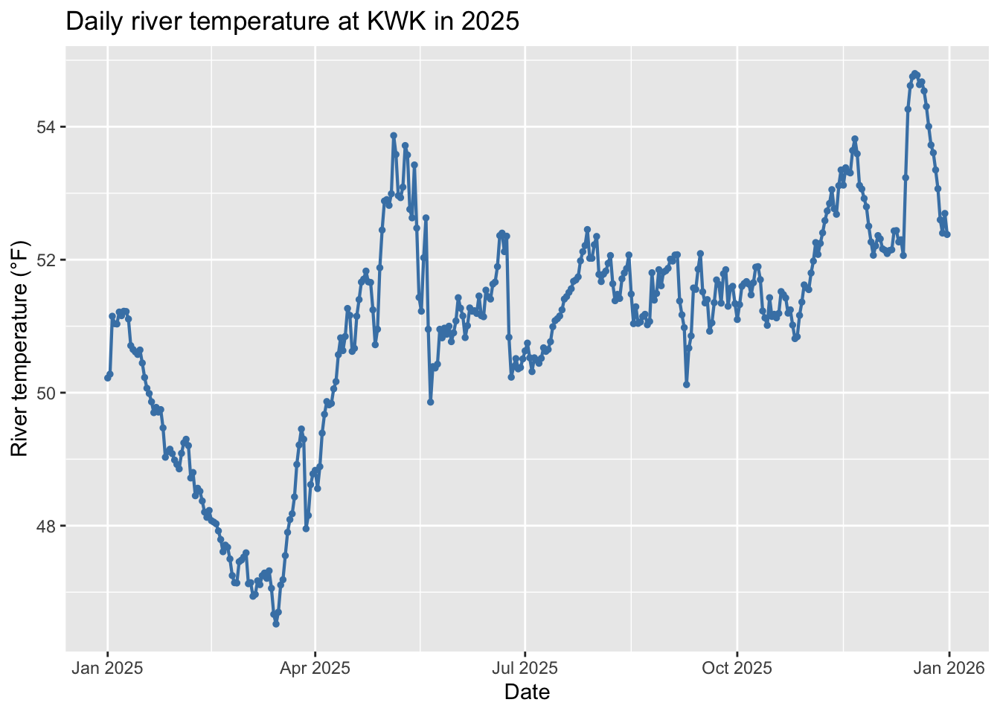
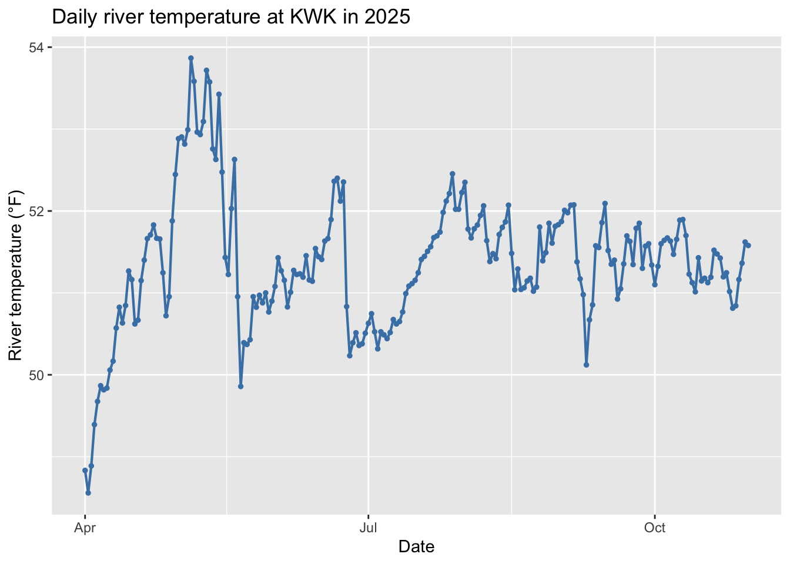
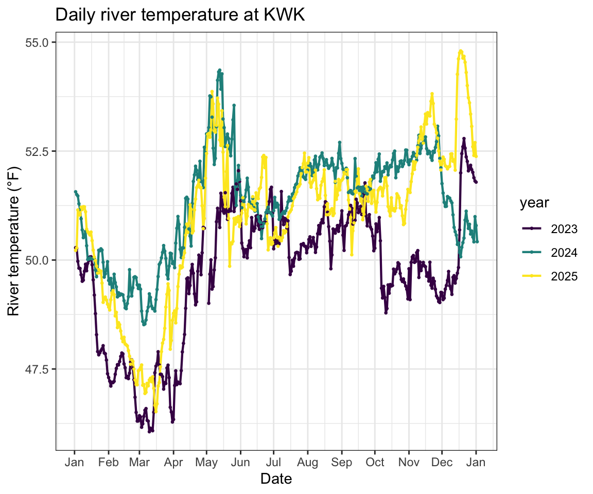
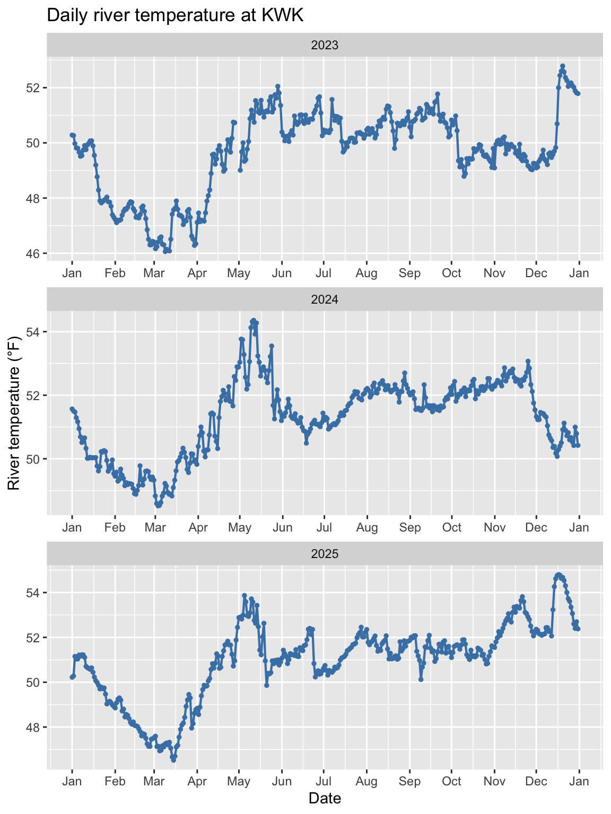
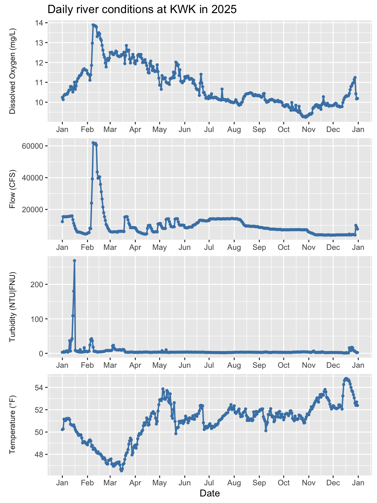
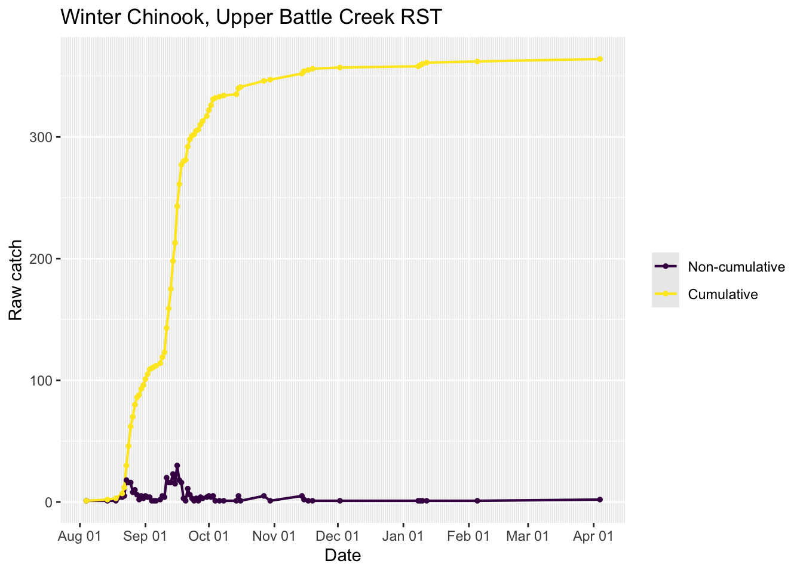
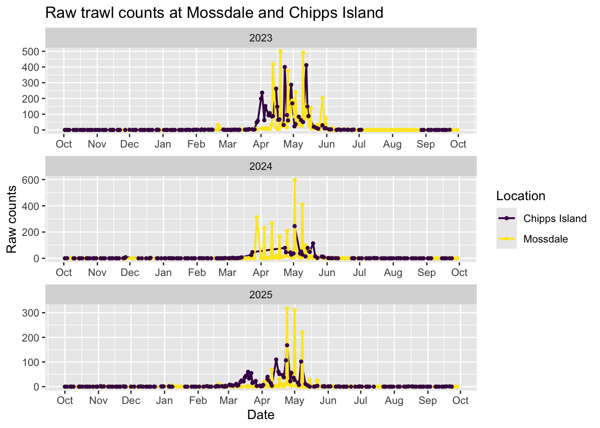
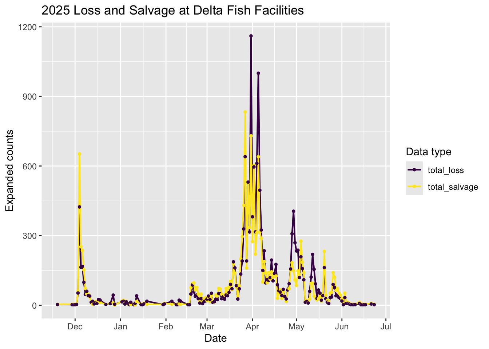
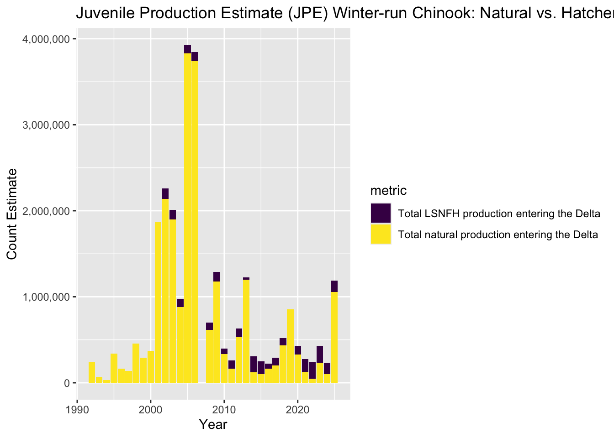

# Names of packages to install and/or load
pkgs<-c("here", "tidyverse", "dplyr", "readr", "lubridate", "viridis", "ggplot2", "scales", "knitr")
# Install packages if not already installed
# Load library packages
if(length(setdiff(pkgs,rownames(installed.packages())))>0) {install.packages(setdiff(pkgs,rownames(installed.packages())),dependencies=TRUE)}
invisible(lapply(pkgs,library,character.only=T))River Conditions and Fish Data & Figures
Example code in R with custom query urls from SacPAS (cbr.washington.edu/sacramento/)
Background
This Quarto html vignette and provides example R code for: 1) accessing data from SacPAS (Central Valley Prediction and Assessment of Salmon; cbr.washintgon.edu/sacramento/) via custom query urls, and 2) generating figures using these data. We start with simple examples and progress to slightly more complex figures and integrated data sets. We focus on data on River Conditions (cbr.washington.edu/sacramento/data/query_river_graph.html) and Fishes (cbr.washington.edu/sacramento/data/query_sampling_graph.html). The custom query urls can be copied from the SacPAS query tools by clickling the option and submitting the query:
R code blocks in this Quarto html vignette also provide examples of query url strings that can be further customized.
R library packages
River Conditions
Daily Data in one year
Show the code
# Choose year and site, and create custom query url
year <- "2025"
site <- "KWK"
temp_unit <- "F" # or could be "C"
my_url <- paste0("https://cbr.washington.edu/sacramento/data/php/rpt/mg.php?sc=1&mgconfig=river&outputFormat=csvSingle&hafilter=All",
"&year%5B%5D=", year,
"&loc%5B%5D=", site,
"&data%5B%5D=WaterTemperature",
"&tempUnit=", temp_unit,
"&startdate=1%2F1&enddate=12%2F31&avgyear=0&consolidate=1&grid=1&y1min=&y1max=&y2min=&y2max=&size=large&resolution=medium")
# Download the data
river_temp_data <- readr::read_csv(my_url)
# Read and save data notes
print(generate_note <- as.character(
river_temp_data[(nrow(river_temp_data)-1),1]))[1] "Generated 28 Oct 2026 18:55:52 PDT. SacPAS River Environment Graphics & Text www.cbr.washington.edu/sacramento/data/query_river_graph.html."Show the code
print(citation_note <- as.character(
river_temp_data[(nrow(river_temp_data)),1]))[1] "Citation. Columbia Basin Research, University of Washington. (2026). SacPAS River Environment Graphics & Text. Available from cbr.washington.edu/sacramento/data/query_river_graph.html."Show the code
# Remove the Notes from data set
river_temp_data <- head(river_temp_data, -3)
# Data wrangling
river_temp_data <- river_temp_data |>
mutate(date = ymd(str_c(year, `mm-dd`, sep = "-")))
# Plot the data
ggplot(river_temp_data, aes(x = date, y = value)) +
geom_line(color = "steelblue", linewidth = 0.75) +
geom_point(color = "steelblue", size = 1) +
labs(
title = paste("Daily river temperature at", site, "in", year),
x = "Date",
y = paste0("River temperature (\u00B0", temp_unit, ")")
)
Start and End Dates
Show the code
# Choose year, site, start and end dates, unit, and create custom query url
year <- "2025"
site <- "KWK"
start_date <- "4%2F1"
end_date <- "10%2F31"
temp_unit <- "F" # or could be "C"
my_url <- paste0("https://cbr.washington.edu/sacramento/data/php/rpt/mg.php?sc=1&mgconfig=river&outputFormat=csvSingle&hafilter=All&year%5B%5D=", year, "&loc%5B%5D=", site, "&data%5B%5D=WaterTemperature&tempUnit=", temp_unit, "&startdate=", start_date, "&enddate=", end_date, "&avgyear=0&consolidate=1&grid=1&y1min=&y1max=&y2min=&y2max=&size=large&resolution=medium")
# Download the data
river_temp_data <- readr::read_csv(my_url)
# Remove the Notes from data set
river_temp_data <- head(river_temp_data, -3)
# Data wrangling
# Date
river_temp_data <- river_temp_data |>
mutate(date = ymd(str_c(year, `mm-dd`, sep = "-")))
# Plot the data
ggplot(river_temp_data, aes(x = date, y = value)) +
geom_line(color = "steelblue", linewidth = 0.75) +
geom_point(color = "steelblue", size = 1) +
labs(
title = paste("Daily river temperature at", site, "in", year),
x = "Date",
y = paste0("River temperature (\u00B0", temp_unit, ")")
)
Multiple years (with legend)

Multiple Years (facet plots)
Show the code
# Build a function
riv_temp_url_fn <- function(year, site, temp_unit) {
paste0("https://cbr.washington.edu/sacramento/data/php/rpt/mg.php?sc=1&mgconfig=river&outputFormat=csvSingle&hafilter=All&year%5B%5D=", year, "&loc%5B%5D=", site, "&data%5B%5D=WaterTemperature&tempUnit=", temp_unit, "&startdate=1%2F1&enddate=12%2F31&avgyear=0&consolidate=1&grid=1&y1min=&y1max=&y2min=&y2max=&size=large&resolution=medium")
}
# Pull in data for years 2023, 2024, and 2025
my_url_2023 <- riv_temp_url_fn(year = "2023", site = "KWK", temp_unit = "F")
river_temp_data_2023 <- readr::read_csv(my_url_2023)
river_temp_data_2023 <- head(river_temp_data_2023, -3)
my_url_2024 <- riv_temp_url_fn(year = "2024", site = "KWK", temp_unit = "F")
river_temp_data_2024 <- readr::read_csv(my_url_2024)
river_temp_data_2024 <- head(river_temp_data_2024, -3)
my_url_2025 <- riv_temp_url_fn(year = "2025", site = "KWK", temp_unit = "F")
river_temp_data_2025 <- readr::read_csv(my_url_2025)
river_temp_data_2025 <- head(river_temp_data_2025, -3)
river_temp_data <- bind_rows(river_temp_data_2023, river_temp_data_2024, river_temp_data_2025)
river_temp_data <- river_temp_data %>%
mutate(date = paste(year, `mm-dd`, sep = "-"),
date = ymd(date),
year = factor(year))
# Plot the data
ggplot(river_temp_data, aes(x = date, y = value, color = factor(year))) +
geom_line(color = "steelblue", linewidth = 0.75) +
geom_point(color = "steelblue", size = 1) +
facet_wrap(~year, scales = "free", nrow = 3, dir = "v") +
scale_x_date(date_labels = "%b", date_breaks = "1 month") +
labs(
title = paste("Daily river temperature at", site),
x = "Date",
y = paste0("River temperature (\u00B0", temp_unit, ")")
) + theme(legend.position = "none") 
Multiple River Data Sets
Show the code
# Build functions
riv_temp_url_fn <- function(year, site, temp_unit) {
paste0("https://cbr.washington.edu/sacramento/data/php/rpt/mg.php?sc=1&mgconfig=river&outputFormat=csvSingle&hafilter=All&year%5B%5D=", year, "&loc%5B%5D=", site, "&data%5B%5D=WaterTemperature&tempUnit=", temp_unit, "&startdate=1%2F1&enddate=12%2F31&avgyear=0&consolidate=1&grid=1&y1min=&y1max=&y2min=&y2max=&size=large&resolution=medium")
}
riv_flow_url_fn <- function(year, site) {
paste0("https://cbr.washington.edu/sacramento/data/php/rpt/mg.php?sc=1&mgconfig=river&outputFormat=csvSingle&hafilter=All&year%5B%5D=", year, "&loc%5B%5D=", site, "&data%5B%5D=Flow&tempUnit=F&startdate=1%2F1&enddate=12%2F31&avgyear=0&consolidate=1&grid=1&y1min=&y1max=&y2min=&y2max=&size=large&resolution=medium")
}
riv_turbidity_url_fn <- function(year, site) {
paste0("https://cbr.washington.edu/sacramento/data/php/rpt/mg.php?sc=1&mgconfig=river&outputFormat=csvSingle&hafilter=All&year%5B%5D=", year, "&loc%5B%5D=", site, "&data%5B%5D=Turbidity&tempUnit=F&startdate=1%2F1&enddate=12%2F31&avgyear=0&consolidate=1&grid=1&y1min=&y1max=&y2min=&y2max=&size=large&resolution=medium")
}
riv_dissolved_oxyg_url_fn <- function(year, site) {
paste0("https://cbr.washington.edu/sacramento/data/php/rpt/mg.php?sc=1&mgconfig=river&outputFormat=csvSingle&hafilter=All&year%5B%5D=", year, "&loc%5B%5D=", site, "&data%5B%5D=DissolvedOxygen&tempUnit=F&startdate=1%2F1&enddate=12%2F31&avgyear=0&consolidate=1&grid=1&y1min=&y1max=&y2min=&y2max=&size=large&resolution=medium")
}
# year and location
year <- "2025"
site <- "KWK"
temp_unit <- "F"
# Download the river temperature data
## build url
riv_temp_url <- riv_temp_url_fn(year = year, site = site, temp_unit = temp_unit)
## download data
riv_temp_data <- readr::read_csv(riv_temp_url)
## read the data Note and then remove from data set
riv_temp_data <- head(riv_temp_data, -3)
riv_temp_data$unit <- as.character(riv_temp_data$unit)
# Download the river discharge data
## build url
riv_flow_url <- riv_flow_url_fn(year = year, site = site)
## download data
riv_flow_data <- readr::read_csv(riv_flow_url)
## read the data Note and then remove from data set
riv_flow_data <- head(riv_flow_data, -3)
# Download the river turbidity data
## build url
riv_turbidity_url <- riv_turbidity_url_fn(year = year, site = site)
## download data
riv_turbidity_data <- readr::read_csv(riv_turbidity_url)
## read the data Note and then remove from data set
riv_turbidity_data <- head(riv_turbidity_data, -3)
# Download the river dissolved oxygen data
## build url
riv_dissolved_oxyg_url <- riv_dissolved_oxyg_url_fn(year = year, site = site)
## download data
riv_dissolved_oxyg_data <- readr::read_csv(riv_dissolved_oxyg_url)
## read the data Note and then remove from data set
riv_dissolved_oxyg_data <- head(riv_dissolved_oxyg_data, -3)
river_data <- bind_rows(riv_temp_data,
riv_flow_data,
riv_turbidity_data,
riv_dissolved_oxyg_data) %>%
mutate(date = paste(year, `mm-dd`, sep = "-"),
date = ymd(date),
datatype = factor(datatype))
ggplot(river_data, aes(x = date, y = value)) +
geom_line(color = "steelblue", linewidth = 0.75) +
geom_point(color = "steelblue", size = 1) +
facet_wrap(~datatype, scales = "free", ncol = 1, nrow = 4,
strip.position = "left",
labeller = as_labeller( c(
WaterTemperature = paste0("Temperature (\u00B0", temp_unit, ")"),
Flow = "Flow (CFS)",
Turbidity = "Turbidity (NTU|FNU)",
DissolvedOxygen = "Dissolved Oxygen (mg/L)") ) ) +
scale_x_date(date_labels = "%b", date_breaks = "1 month") +
ylab(NULL) +
labs(
title = paste("Daily river conditions at", site, "in", year),
x = "Date") +
theme(
strip.placement = "outside",
strip.background = element_blank(),
axis.title.y = element_blank()
)
Fish Data
Rotary Screw Trap
Show the code
year <- 2025
location <- "UBC"
is_cumulative <- 0 # 0 for non-cumulative data, 1 for cumulative data
non_cumulative_url <- paste0("https://www.cbr.washington.edu/sacramento/data/php/rpt/sampling_graph.php?sc=1&outputFormat=csv&year=", year, "&species=CHN%3AWinter&loc=trap%3A", location, "%3A0&cumData=", is_cumulative, "&typeData=raw&resolution=medium")
print(non_cumulative_url)[1] "https://www.cbr.washington.edu/sacramento/data/php/rpt/sampling_graph.php?sc=1&outputFormat=csv&year=2025&species=CHN%3AWinter&loc=trap%3AUBC%3A0&cumData=0&typeData=raw&resolution=medium"Show the code
is_cumulative <- 1 # 0 for non-cumulative data, 1 for cumulative data
cumulative_url <- paste0("https://www.cbr.washington.edu/sacramento/data/php/rpt/sampling_graph.php?sc=1&outputFormat=csv&year=", year, "&species=CHN%3AWinter&loc=trap%3A", location, "%3A0&cumData=", is_cumulative, "&typeData=raw&resolution=medium")
# Data-cleaning function
prepare_data <- function(my_url, is_cumulative) {
data <- readr::read_csv(my_url)
if (is.data.frame(data) &&
nrow(data) > 0 &&
ncol(data) >= 2 &&
"Date" %in% names(data)) {
data <- head(data, -7)
# Rename the second column to "count"
data <- rename(data, count = 2)
data <- data |>
mutate(
date = ymd(Date),
is_cumulative = is_cumulative
) |>
filter(!is.na(count))
print(data)
return(data)
} else {
return(NULL)
}
}
# Clean the data from each query call
non_cumulative_data <- prepare_data(non_cumulative_url, 0)# A tibble: 64 × 4
Date count date is_cumulative
<chr> <dbl> <date> <dbl>
1 2025-08-04 1 2025-08-04 0
2 2025-08-14 1 2025-08-14 0
3 2025-08-18 1 2025-08-18 0
4 2025-08-21 4 2025-08-21 0
5 2025-08-22 5 2025-08-22 0
6 2025-08-23 18 2025-08-23 0
7 2025-08-24 16 2025-08-24 0
8 2025-08-25 16 2025-08-25 0
9 2025-08-26 8 2025-08-26 0
10 2025-08-27 10 2025-08-27 0
# ℹ 54 more rowsShow the code
cumulative_data <- prepare_data(cumulative_url, 1)# A tibble: 64 × 4
Date count date is_cumulative
<chr> <dbl> <date> <dbl>
1 2025-08-04 1 2025-08-04 1
2 2025-08-14 2 2025-08-14 1
3 2025-08-18 3 2025-08-18 1
4 2025-08-21 7 2025-08-21 1
5 2025-08-22 12 2025-08-22 1
6 2025-08-23 30 2025-08-23 1
7 2025-08-24 46 2025-08-24 1
8 2025-08-25 62 2025-08-25 1
9 2025-08-26 70 2025-08-26 1
10 2025-08-27 80 2025-08-27 1
# ℹ 54 more rowsShow the code
if (is.null(non_cumulative_data) || is.null(cumulative_data)) {
print(paste("Data missing when plotting non-cumulative and cumulative plot for year =", year, "and location =", location))
} else {
# Combine rows into a single data frame
upper_battle_creek_data <- bind_rows(non_cumulative_data, cumulative_data)
# Plot the data
ggplot(upper_battle_creek_data, aes(
x = date,
y = count,
color = factor(is_cumulative, levels = c(0, 1), labels = c("Non-cumulative", "Cumulative"))
)) +
geom_line(linewidth = 0.75) +
geom_point(size = 1) +
scale_x_date(date_labels = "%b %d", date_breaks = "1 month", date_minor_breaks = "1 day") +
scale_color_viridis_d() +
labs(
title = paste("Winter Chinook, Upper Battle Creek RST"),
x = "Date",
y = "Raw catch",
color = NULL
)
}
Trawl
Show the code
assemble_url <- function(water_year, species_code, loc_code) {
paste0("https://www.cbr.washington.edu/sacramento/data/php/rpt/sampling_graph.php?sc=1&outputFormat=csv&year=", water_year, "&species=", species_code, "&loc=", loc_code, "&typeData=raw&resolution=medium")
}
fetch_and_clean_data <- function(water_year, species_code, loc_code, loc_name) {
url <- assemble_url(water_year = water_year, species_code = species_code, loc_code = loc_code)
data <- readr::read_csv(url) |> mutate(date = ymd(Date))
# Chipps Island data "year" means calendar year (whereas Mossdale data "year"
# means water year) so to make them consistent with each other, we need to
# assemble both halves of the water year for Chipps Island data.
if (loc_name == "Chipps Island") {
# October 1st is the start of a new water year
first_year <- water_year
oct_thru_dec_data <- data |> filter(date >= make_date(first_year, 10, 1))
second_year <- water_year + 1
jan_thru_sept_url <- assemble_url(water_year = second_year, species_code = species_code, loc_code = loc_code)
jan_thru_sept_data <- readr::read_csv(jan_thru_sept_url) |> mutate(date = ymd(Date)) |> filter(date < make_date(second_year, 10, 1))
data <- bind_rows(oct_thru_dec_data, jan_thru_sept_data)
}
if (is.data.frame(data) &&
nrow(data) > 0 &&
ncol(data) >= 3 &&
"Date" %in% names(data)) {
# Remove metadata at the bottom of the CSV
data <- head(data, -6)
# Rename the second column to "count"
data <- rename(data, count = 2)
data <- data |>
mutate(location = loc_name,
water_year = water_year) |>
filter(!is.na(count)) |>
# Remove the third column (sample counts)
select(-3) |>
select(-Date)
return(data)
} else {
print(paste("Data not available for year =", year, "and location =", loc_name))
return(NULL)
}
}
# Collate data
collate_data <- function(water_years, species_code) {
all_data <- data.frame()
for (water_year in water_years) {
mossdale_data <- fetch_and_clean_data(water_year = water_year, species_code = species_code, loc_code = "trawl%3ASJ054%3A1", loc_name = "Mossdale")
if (!is.null(mossdale_data)) {
all_data <- bind_rows(all_data, mossdale_data)
}
chipps_island_data <- fetch_and_clean_data(water_year = water_year, species_code = species_code, loc_code = "trawl%3ASB018%3A1", loc_name = "Chipps Island")
if (!is.null(chipps_island_data)) {
all_data <- bind_rows(all_data, chipps_island_data)
}
}
return(all_data)
}
plot_data <- function(water_years, species_code) {
all_data <- collate_data(water_years, species_code)
if (nrow(all_data) > 0) {
ggplot(all_data, aes(x = date, y = count, color = location)) +
geom_line(linewidth = 0.75) +
geom_point(size = 1) +
facet_wrap(~water_year, scales = "free", nrow = 3, dir = "v") +
scale_x_date(date_labels = "%b", date_breaks = "1 month") +
labs(
title = paste("Raw trawl counts at Mossdale and Chipps Island"),
x = "Date",
y = "Raw counts",
color = "Location"
) +
scale_color_viridis_d()
}
}
# Configure parameters manually
water_years <- 2023:2025
species_code <- "CHN%3AAll"
plot_data(water_years = water_years, species_code = species_code)
Loss and Salvage
Show the code
year <- 2025
species_code <- "1%3Aall"
url <- paste0("https://cbr.washington.edu/sacramento/data/php/rpt/juv_loss_detail.php?sc=1&outputFormat=csv&year=", year, "&species=", species_code, "&dnaOnly=no&age=no")
data <- readr::read_csv(url)
loss_and_salvage_data <- data |>
mutate(date = as_date(ymd_hms(`Sample Time`))) |>
select(c(date, `Expanded Salvage`, `Loss`)) |>
group_by(date) |>
summarise(total_salvage = sum(`Expanded Salvage`), total_loss = sum(Loss)) |>
pivot_longer(cols = c(total_salvage, total_loss),
names_to = "type",
values_to = "count")
ggplot(loss_and_salvage_data, aes(x = date, y = count, color = type)) +
geom_line(linewidth = 0.75) +
geom_point(size = 1) +
scale_x_date(date_labels = "%b", date_breaks = "1 month") +
labs(
title = paste("2025 Loss and Salvage at Delta Fish Facilities"),
x = "Date",
y = "Expanded counts",
color = "Data type",
) +
scale_color_viridis_d()
JPE
Show the code
url <- "https://cbr.washington.edu/sacramento/data/php/rpt/jpe.php?sc=1&year=all"
# The source data is tab-delimited, so use `read_tsv()`
data <- readr::read_tsv(url) |> filter(metric == "Total natural production entering the Delta" | metric == "Total LSNFH production entering the Delta") |> select(c(brood_year, value, metric))
ggplot(data, aes(x = brood_year, y = value, fill = metric)) +
geom_col() +
scale_fill_discrete(
name = "Origin",
breaks = c("Total LSNFH production entering the Delta", "Total natural production entering the Delta"),
labels = c("Hatchery", "Natural")
) +
scale_y_continuous(labels = scales::label_comma()) +
labs(title = "Juvenile Production Estimate (JPE) Winter-run Chinook: Natural vs. Hatchery",
x = "Year",
y = "Count Estimate") +
scale_fill_viridis_d()
Aerial Redds Surveys
Show the code
url <- "https://cbr.washington.edu/sacramento/data/php/rpt/redd_aerial.php?sc=1&outputFormat=csv&year=all&run=all§ion=all"
data <- readr::read_csv(url) |> mutate(year = year(ymd(date))) |> group_by(year, reach) |> summarise(count = sum(reddcount)) |> filter(!is.na(reach))
ggplot(data, aes(x = year, y = count, fill = reach)) +
geom_col() +
scale_y_continuous(labels = scales::label_comma()) +
labs(title = "Aerial Survey Chinook Redd Counts",
x = "Year",
y = "Count") +
scale_fill_viridis_d(name = "Reach")